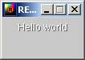
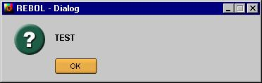

Date
Version
Commentaires
Auteur
23/12/2004 13:28
0.0.1
Version initiale et assemblages notes
Philippe Le Goff
lp--legoff--free--fr
28/02/2005 21:52
0.0.9
Version consolidée
Philippe Le Goff
lp--legoff--free--fr
15/03/2005 22:10
1.0.0
Version stabilisée
Philippe Le Goff
lp--legoff--free--fr
View repose sur Rebol/Core et lui ajoute des éléments pour :
décoder des images de type jpeg, gif, bmp et png afficher des objets graphiques, et gérer des effets visuels gérer les événements (Event Handler) : position de la souris, action utilisateur (clics), touches pressées (keyboard) , temps (timer).
Le gestionnaire d'événements (event handler) gére ces événements au travers d'un port, autorisant la mise en attente de l'événement, sa suppression, etc...View permet donc à l'utilisateur Rebol de construire et manipuler des interfaces graphiques rapidement, avec leurs événements propres.
NB. :
Il est fortement conseillé avant de poursuivre ce document de (re)lire les documentations concernant View, sur le site officiel, ou sur http://www.codeconscious.com/ par exemple.
Rebol Technologies :
- http://www.rebol.com/documents/view.html
- http://www.rebol.com/docs/view-guide.html
- http://www.rebol.com/docs/draw.html
- http://www.rebol.com/docs/draw.html
Sur le site de CodeConscious (Brett Handley) :
- http://www.codeconscious.com/rebol/view-overview.html
- http://www.codeconscious.com/rebol/view-overview.html
- http://www.codeconscious.com/rebol/vid-notes.html
- http://www.codeconscious.com/rebol/vid-notes.html
- http://www.codeconscious.com/rebol/view-notes.html
- http://www.codeconscious.com/rebol/view-notes.html
- http://www.codeconscious.com/rebol/layout-notes.html
- http://www.codeconscious.com/rebol/layout-notes.html
Et sinon, sur le site de RebolForces :
Par ailleurs, au moins deux scripts sont à connaître :
- vid-ancestry.r ou vid-hierarchy.r de Brett Handley,
- ... et la boîte à outil de Rebol : Anamonitor.r (v. 2.0.0, de Romano Paolo Tenca) ( http://www.rebol.it/~romano/#sect1.2 )
Pour parler des objets de type bouton, area, etc, on utilisera le mot "widget" ou composant graphique, plutôt que "style" dont le sens est multiple et ne traduit pas bien, à mon avis, la nature de ces objets.
Pour parler des composants statiques ou dynamiques (méthodes) d'un objet, on parlera génériquement des "attributs" de l'objet.
Nom
Définition
Remarques
View
Fonction mezzanine, reçoit en argument un objet de type graphique et l'affiche, en assurant la gestion des évènements
View utilise par ailleurs un objet appelé system/view/screen-face qui "représente" l'écran.
VID
Visual Interface Dialect : dialecte objet Rebol (object!) qui définit notamment les régles de parsing, les définitions de fonctions (comme layout) ou mots-clés pour la prise en charge d'interface graphique
Certains mots-clé sont définis dans le VID via l'instruction set qui les associe au contexte Global de rebol. C'est le cas de layout (ce qui explique qu'on n'ait pas à utiliser le path : system/view/vid/layout pour appeler la fonction. Voir aussi : svv .
Layout
Fonction mezzanine définie dans le VID. Elle reçoit en argument un bloc (block !) composé de mots Rebol. Layout renvoie en retour un objet graphique de type 'face
Le bloc fournit en argument décrit l'interface via les mots-clé du VID et la fonction layout le parse selon les règles du VID. Layout est connue dans le contexte global des mots Rebol.
Face
Un objet graphique : par exemple un bouton (button, ou btn), ou champ texte
Il existe un objet de bas niveau de type 'Face : system/standard/face De ce type générique, dépendent les autres objets graphiques ('image, 'btn, 'text-area, ..) , par héritage.
Facets
Il s'agit des attributs de l'objet graphique : sa couleur ('color) , sa taille ('size), etc
Parmi les attributs d'un objet graphique, quatre sont particuliers, et sont eux-mêmes des objets :
* font : définit les caractéristiques de la police de caractère pouvant être associée à l'objet (la police du texte d'un bouton) * edge : définit les caractéristiques de la bordure entourant l'objet (couleur, taille, effet) * para : définit les attributs de formatage * feel : définit les caractéristiques du comportement de l'objet en réponse aux évènementsDraw
Il s'agit d'un dialecte dédié au graphisme, et à l'interactivité.
Il est possible de générer dynamiquement le bloc qui sera parsé par Draw. L'ordre des éléments est important, et dans les prochaines versions de View, Draw acceptera un sous-dialecte : Shape.
svv
Un alias pour le chemin (path) : system/view/VID
Voir : probe first svv pour avoir les attributs de l'objet VID
svvf
Alias pour : system/view/VID/vid-feel
La liste des comportement génériques associés aux objets 'face.
Un changement sur le vid-feel SENSOR impacte l'objet 'face de type SENSOR.event
Un évènement
Les actions sur l'interface graphique sont liées aux événements qui s'y produisent. Par exemple, un clic de souris sur un bouton est un évènement.
Les événements sont définis par leur type, la position ou la nature du curseur/touche, etc.do-events
Fonction mezzanine
Déclenche la gestion des événements.
Hiérarchie / héritage
Les liens pouvant exister entre un objet et un autre dérivant du premier.
Un objet père fournit ses attributs à un objet fils. Une modification du père peut entraîner en cascade celle des fils, une modification sur les objets enfants n'entraîne pas celles du parent.
Rebol/View rend possible la création d'interfaces graphiques de haute qualité.
Quelques notions générales doivent être gardées à l'esprit :
- deux façons de créer des interfaces graphiques Il existe en Rebol plusieurs façons d'atteindre le même résultat apparent, simplement avec des codes différents. Rebol/View ne déroge pas à cette règle, et propose deux façons de créer des interfaces graphiques : via le dialecte VID, ou via la création directe d'objets graphiques (make face).
Bien sûr, un mélange des genres demeure possible.- Il n'y a qu'un seul type d'objet graphique appelé 'Face.
Cet objet possède des attributs, les Facets, qui peuvent être : soit des attributs simples (color, size), soit des attributs complexes : objets tels que 'feel (comportement), 'para (formatage), 'font (police de caractères), 'edge (bordure). Certains attributs peuvent être spécifiques car déclarés comme tels par l'utilisateur (usage des mots 'with, 'words lors de la création d'une 'Face)- Hiérarchie des objets / principe de conteneur/contenu
dans une interface graphique, tout comme au niveau même des objets graphiques (boutons, champs, ...) qui la constitue, existe des liens hiérarchiques et de dépendances. Par exemple, le 'Face conteneur primaire est l'écran (screen-face), dans lequel vont venir se positionner les différentes fenêtres de l'interface. Localement, au sein d'une fenêtre, un bouton (button) peut lui aussi devenir un conteneur pour accueillir par exemple un objet de type 'box, et former ainsi un bouton avec une icône. Il est donc nécessaire de bien évaluer ces dépendances.- Les événements
la gestion de l'interface graphique repose sur l'attente d'événements : positionnement du curseur, clic sur un bouton, être dessus un champ texte, etc.. Les événements générés par un utilisateur sont donc "capturés" et mis dans une file d'attente pour leur traitement. Il est possible de rajouter au comportement standard des comportements spécifiques (fonction insert-event-func ).
Ce sont ces quatre points qui vont être abordés.
Il y a deux façons de construire une interface graphique avec Rebol/View.
- La première consiste à utiliser le dialecte VID avec l'usage de la fonction layout. Cette fonction, qui va parser selon des régles données un bloc fourni en argument, renvoie un objet graphique à afficher :
view layout [ text " Bonjour "]
- La seconde est de créer directement les objets graphiques en utilisant la fonction make :
view make face [ text : " Bonjour "]appliquée sur le prototype 'face (défini dans system/standard).
Le tableau suivant montre les différences entre les deux approches :
Usage du Dialecte VID
Création directe des Objets Graphiques
Usage de la fonction layout. Le VID est défini en tant qu'objet Rebol.
Voir probe type? system/view/vid (ou svv)Application de la fonction make sur l'objet 'face voir : probe first make face comme objet graphique.
qui renvoie :
state style alt-action facets related words colors texts images file var keycode reset styles init multi blinker pane-size dirty? help user-data flags en moins que probe first svv/vid-face
Approche plus simple et intuitive.
Code plus concis, mais parfois moins précis.
Layout ajuste automatiquement la fenêtre au contenu, avec notamment un offset de 20x20.Plus grande rigueur de programmation.
Code plus précis, permettant la création et la manipulation d'objets "sur mesure", mais plus "verbeux".Pas d'équivalence entre : probe layout []
et : probe make face []
Un bloc de mots-clés est fourni en argument à la fonction layout, qui effectue le parsing du bloc, et qui renvoie un objet graphique. Cet objet graphique est interprété par la fonction view, qui renvoie la fenêtre affichée.
Les Faces et leurs attributs sont construites directement à partir de code Rebol, sur l'héritage de l'objet 'face.
donc en synthèse :
Il est possible aussi via la méthode directe de créer des objets reposant sur des styles pré-définis dans le VID.
Par exemple, en utilisant la fonction : make-face .Une autre différence entre le VID et l'approche directe réside dans l'écriture du code, notamment l'assignation des variables.
Code
Résultat
Comme View dont il fait partie, le VID est un objet au sens Rebol. C'est dans le VID que, via la fonction 'layout, sont définies les régles du dialecte (le "D" de VID), permettant la traduction d'un ensemble de mots-clés, en vue de créer des objets graphiques facilement.
Cela signifie que cette méthode de création d'interface repose sur le principe du parsing.
Le VID définit un certain nombre de fonctions au niveau du contexte global de Rebol :
- load-image : permet le chargement en mémoire d'une image.
- get-style : récupère un style, par défaut dans vid-styles ( get-style btn) et retourne le style
- set-style : ajoute une définition de style à vid-styles, par défaut (set-style mon-style mon-objet)
- stylize : permet de définir un style
- set-font : permet de définir les attributs de police
- set-para : permet de définir les attributs de paragraphe
- set-edge : permet de définir les attributs de bordure set-edge box 'size 1x1
- make-face : crée un objet 'face à partir d'un style donné ou d'un objet graphique (make-face 'btn)
- layout : évalue un bloc de définitions graphiques et retourne un objet de type 'face
- choose pour générer un menu vertical ou horizontal
C'est en particulier la fonction layout qui assure ce parsing du bloc [mots-clés + propriétés] fourni en argument.
Typiquement, on construit un bloc structuré tel que :
mon-bloc: [ origin 0x0 btn "Test" aqua [quit]] ; c'est un vrai bloc probe type? mon-bloc ==block! mon-objet-graphique: layout mon-bloc ; <-- ici c'est un objet de type 'face probe type? mon-objet-graphique == object! probe first mon-objet-graphique ==[self type offset size span pane text color image effect data edge font par a feel saved-area rate show? options parent-face old-offset old-size line-l ist changes face-flags action state access style alt-action facets related words colors texts images file var keycode reset styles init multi blinker pane-size dirty? help user-data flags doc parent]L'application de layout sur le bloc structuré renvoie un objet graphique, pouvant contenir un ou plusieurs autres objets graphiques (pane).
Ensuite, l'appel de la fonction view sur mon-objet-graphique déclencherait l'affichage à l'écran (via la fonction native show) et la gestion des événements (via la fonction do-events).
Un autre effet induit du parsing : le bloc fourni en argument au layout doit présenter une certaine structure, que les règles de parsing vont tenter de transcrire.
Globalement, six actions sont effectuées par layout :
- Définir et récupérer les styles (styles / stylize),
- calculer les attributs des faces ( red pour la couleur),
- créer les objets graphiques (text, button),
- définir les variables (my-button),
- calculer les positions et orienter les objets (across, below),
- et exécuter le code Rebol (do).
Comme le parsing est orienté flux de données, si une image est déclarée avant un bouton, celle-ci sera traitée avant celui-ci pour l'affichage.
Le bloc fourni à la fonction layout est une collection de mots-clés suivis de propriétés (pair! string! tuple!) en nombre variable, mais de datatype! distincts : il y a rarement dans le bloc deux chaînes de caractères qui se suivent : btn "test" "OK". Le parsing utilisé par le VID est en effet fortement "typé".
Il n'y a donc pas d'affectation de variables (genre set) comme dans :
color: aquasauf pour :
- le nommage des objets (my-bouton: btn red ),
- les affectations dans les sous-objets (font, para, edge, feel)
- et les blocs d'actions associés aux 'Faces.
La syntaxe du dialecte est donc légérement différente de la méthode directe, qui procède, elle, par des affectations régulières Rebol.
Les mots-clés du bloc VID fournis à la fonction layout appartiennent à trois catégories : Style, position, et action.
Mots-clés "STYLE"
Mots-clés "POSITION/Taille"
Mots-clés "ACTION"
Size Space Backdrop Backtile Image Title Text Label Field Area Button Arrow Toggle Rotary Choice Check Radio Slider Progress Box Frame Sensor Panel list
Origin Tabs Pad At Across Below Return Guide Indent Tab
Do Style Styles
Christophe Coussement (aka reboltof) a mis en ligne sur RebolFrance.org un résumé de certains mots-clés (http://www.rebolfrance.org/articles/).
USAGE:
LAYOUT specs /size pane-size /offset where /parent new /origin pos /styles list /keepDESCRIPTION: Retourne un objet graphique pouvant servir de conteneur, en utilisant le dialecte VID. LAYOUT est une fonction.
ARGUMENTS:
specs -- Dialecte bloc de styles, attributs, et diposition (Type: block)RAFINNEMENTS:
/size pane-size -- Taille (largeur x hauteur) de l'objet graphique rendu (Type: pair) /offset where -- Position de l'objet graphique retourné (Type: pair) /parent -- indique le style parent new -- Le style de face du panneau (Type: object word block) /origin pos -- Position d'origine du layout (Type: pair) /styles list -- bloc de styles à utiliser (Type: block) /keep -- Conserve les indications de style /tight -- Offset et origine à zéro
5.2.1 Que fait-elle ?
[Didier Cadieu (aka Didec) Site Codeur ]
- layout fait un parse du bloc pour distinguer ce qui concerne le layout et le contenu (les faces)
- elle appelle 'expand-specs et 'grow-specs (system/view/VID) qui gèrent la création de chaque face.
- 'grow-facet cherchent les mots dans le block "words" du facet puis dans system/view/VID/facet-words qui contient toutes les options que vous connaissez (et celles que vous ne connaissez pas ;-).
Le bloc structuré de mots-clés et d'attributs passé à la fonction layout est parsé selon des règles (vid-rules, et pos-rules), pour fournir un objet nommé : new-face .
Comment est défini cet objet : new-face ?
new-face: make any [ all [parent object? new new ] all [parent word? new get-style new ] vid-face ]Si le raffinement /parent n'est pas fourni, c'est-à-dire la plupart du temps pour 'layout, new-face prend la valeur de vid-face.( défini dans system/view/vid).
Vid-face :Il s'agit d'un objet basé sur l'objet 'face, c'est-à-dire sur system/standard/face,
mais qui y ajoute plus d'une vingtaine d'attributs :vid-face: make face [ ; root definition state: false ; état du bouton access: ; ??? style: ; style used to define face action: ; action to take on pick alt-action: ; the other mouse button facets: ; face attributes to be parsed related: ; relational tags words: ; special keywords actions colors: ; alternate face colors texts: ; alternate text images: ; alternate images file: ; media file var: ; variable used to hold face keycode: ; shortcut key reset: ; reset to original value styles: ; styles used in the pane init: ; what to do after the face is made multi: ; multiple facet handers blinker: ; state of the blink pane-size: ; size of layout pane dirty?: ; indicates that text has been changed help: ; optional help string user-data: none flags: [] ; option flags doc: ; documentation edge: make edge [size: 0x0] ; <<---- déja existant font: make font [style: none color: white align: 'left valign: 'top shadow: 1x1 colors: vid-colors/font] ;<<---- déjà existant ]Typiquement, presque tous ces attributs sont nouveaux, font et edge existent déjà mais sont redéfinis.
Styles :
Par exemple, l'attribut 'styles de 'vid-face correspond aux styles définis dans le conteneur (pane). Avec 'layout, new-face/styles devient : system/view/VID/vid-styles, si le raffinement /styles n'a pas été donné avec une liste de styles ('btn, 'text, 'field,..).C'est-à-dire que layout chargera par défaut l'ensemble des styles existants ('face inclus), et sinon, avec le raffinement /styles juste les styles fournis en argument.
Parmi les possibilités offertes par le parsing, il existe un moyen de définir un arrière-plan de couleur : 'backcolor définira la couleur d'arrière plan de new-face
view layout [ box 100x50 red backcolor yellow ]Sur l'une des bétas de View (1.2.54) , il est également possible de définir un effet particulier de new-face avec le mot-clé 'backeffect.
Ce dernier autorise la définition des effets standards comme 'grid, 'arrow, 'sharpen .view layout [ box 100x50 aqua + 50 backcolor coal backeffect [grid 5x5 gray]]
Résumé :
Le parsing va permettre de "mapper" les mots-clés et leurs valeurs avec les définitions de vid-styles.
La fonction layout définit donc un nouvel objet graphique par héritage et surcharge l'objet primaire 'face via de nouveaux attributs.
Cet objet ('new-face) retourné par layout sert de conteneur pour accueillir les widgets générés par les déclarations en VID.
A noter que l'objet 'face est en principe protégé (protect face). En effet une modification de cet objet dans la hiérarchie REBOL impacterait 'vid-face, 'blank-face, et tous les widgets qui en dérivent.
Enfin, l'objet 'face est connu dans le contexte global, alors que 'vid-face ne l'est que dans le contexte de l'objet system/view/VID.
'blank-face est un clone de 'face, mais dont la plupart des objets ou attributs (soit edge: font: para: feel: image: color: text: effect) sont à "none".
'blank-face est donc un objet graphique particulier, il sert notamment à générer par héritage les faces 'sensor et 'key, par exemple, dont le comportement est aussi celui des images.
5.3.1 Que fait-elle ?
Elle reçoit en argument un objet de type 'face et suivant les raffinements utilisés, va permettre son affichage, et déclencher la gestion des évenements.
5.3.2 Que retourne-t-elle ?
Elle retourne l'objet graphique, après avoir réalisé son affichage.
5.3.3 Ses raffinements ?
/new ;qui permet de créer un nouvelle fenêtre /offset ;pour positionner la fenêtre dans l'écran /options ;pour indiquer si on veut un titre, ou pouvoir redimensionner la fenêtre /title ;qui permet d'affecter un titre à la fenêtre.Il est possible avec la fonction 'source de voir le code, bien sûr :
func [ "Displays a window face." view-face [object!] /new "Creates a new window and returns immediately" /offset xy [pair!] "Offset of window on screen" /options opts [block! word!] "Window options [no-title no-border resize]" /title text [string!] "Window bar title" /local scr-face ][ scr-face: system/view/screen-face ; l'écran ! if find scr-face/pane view-face [return view-face] ; si la face existe déjà, sortie either any [ new ; le rafinement new existe empty? scr-face/pane ; le conteneur pane de l'écran est vide ] [ view-face/text: any [ view-face/text all [ system/script/header system/script/title ] copy "" ] new: all [ not new ; pas de rafinement new empty? scr-face/pane ; pas de fenêtre dans scr-face ] append scr-face/pane view-face view-face/feel: window-feel ; comportement fenêtre ] [ change scr-face/pane view-face ] if offset [view-face/offset: xy] if options [view-face/options: opts] if title [view-face/text: text] show scr-face if new [do-events] view-face ]La fonction 'View renvoie l'objet qui lui est passé en argument, ajoute cet objet au conteneur "écran", et assure le déclenchement de la gestion des évenements.
Il faut noter que l'affichage est rendu par la fonction native 'show, qui effectue tout le travail de rendu au niveau de scr-face (l'écran).
Les différents objets graphiques dérivent tous d'un même objet-parent : 'face,
qui est en quelque sorte le proto-objet, l'objet "root", à partir duquel tous les autres vont être construits.Cet objet est décrit dans system/standard.
Il est protégé pour éviter les modifications en cascade. (protect 'face) /note
L'objet 'vid-face (pour le VID) hérite des caractéristiques de l'objet 'face, et donne à son tour l'objet 'blank-face. Vid-face se caractérise cependant par des attributs dédiés et, par exemple, par l'apparition du sous-objet 'multi.
Ces deux objets ('face et 'blank-face) permettent la création des styles de widgets comme le bouton (button), le champ texte (text, ou area). Tous les widgets ou styles au sens Rebol (button, ...) dérivent de ces deux objets.
Une interface est donc constitué de plusieurs objets de type 'face liés entre eux par des liens d'héritage, ou de surcharge, chacun d'entre eux pouvant avoir un forme, une couleur, une réactivité (feel), etc...
Chaque widget possède des attributs appelés facets. Ces attributs peuvent être la couleur (color), la position (offset), la taille (size), le style, le format des paragraphes, etc... Certains de ces attributs sont eux-mêmes des objets : 'edge (bordure), 'font (police), 'para (paragraphe), 'feel (comportement).
Ceci permet de réutiliser et de partager les caractéristiques de certains objets graphiques : par exemple, plusieurs boutons peuvent partager le même style de bordures, de polices, etc..
6.1 Contenu de 'face
probe system/standard/face
Objet
Face
Pane est la variable permettant de définir les objets encapsulés dans celui décrit. (peut être un seul objet, une liste d'objet, ou une fonction)
Objet edge (bordure) définissant les caractéristiques du contour de la 'face. Attributs : couleur, image (fichier), effet (tile, clip, expand,...), taille .
Objet font: permet la spécification du style de la police utilisée : son nom (défaut = arial 12 noir), l'alignement, la position relative dans l'objet 'face.
Objet para (paragraph) : définit les caractéristiques de formatage du texte dans l'objet.
Permet de caractériser le comportement de la face vis-à-vis des évenements. Quatre fonctions (redraw.. engage) sont possibles, chacune correspondant à un niveau d'évenement.
Rate est le timer interne pour le raffraichissement de l'objet
show? est l'équivalent du "visible" de Visual Basic.
parent-face : le nom si elle existe de la face contenant celle-ci
action : le bloc ou la fonction décrivant l'action à réaliser
6.2 Un objet particulier : screen-face
L'objet 'screen-face est défini dans system/view et repose lui-aussi sur le type 'face.
Cependant, cet objet est particulier.
Il sert à décrire virtuellement la zone d'affichage, c'est-à-dire votre écran.
Par exemple, system/view/screen-face/size fournira la résolution courante de votre moniteur.
L'objet 'screen-face implémente la plupart des attributs rencontrés par ailleurs pour les widgets (boutons et autres).
Par exemple, le sous-objet edge de 'screen-face renverra :make object! [ color: 200.200.200 image: none effect: none size: 2x2 ]
6.2.1 Screen-face : un conteneur des fenêtres
'screen-face est un conteneur pour les fenêtres affichées par View.
La plupart des fenêtres créées par les actions de l'utilisateur (à l'exception des fenêtres modales) vont être référencées dans la variable "pane".
>>print length? system/view/screen-face/pane 0 >>view fen: layout [btn "voir screen-pane" [ print length? system/view/screen-face/pane dump-face system/view/screen-face/pane/1 ] ] 1 Style: none Offset: 25x25 Size: 141x62 Text: Style: btn Offset: 20x20 Size: 101x22 Text: voir screen-paneDans l'exemple ci-dessus, system/view/screen-face/pane/1 correspond à la fenêtre fen .
S'il y avait d'autres fenêtres, leurs références seraient ajoutées au bloc pane :
system/view/screen-face/pane/2, system/view/screen-face/pane/3, ...Cependant, ceci n'est vrai que pour les fenêtres non-modales. Les fenêtres modales (générées par exemple par request-color) sont quant à elles référencées dans system/view/pop-list.
6.2.2 Screen-face et la gestion d'événements
Screen-face implémente par ailleurs une fonction supplémentaire de gestion d'événements dans son sous-objet 'feel. En effet, en plus de detect, redraw, over et engage, la fonction 'events-func est définie.
6.3 Des fenêtres particulières : request, inform et show-popup ...
6.3.1 La fonction request
Request est une fonction pour construire un fenêtre modale (attendant un évènement de l'utilisateur, genre boîte d'alerte, ou boîte de dialogue ). Le code de la fonction est construit en gros en deux parties :
un test si l'argument est un objet graphique ou autre chose (string!), puis selon le cas (et la version de rebol!) la construction de l'interface dédiée :request/ok/type "TEST" 'help
Si l'argument fourni à la fonction request est un objet graphique de type face, alors le code de request se réduit à
request-win: func [ "Requests a modal window." a-face [object! none!] /offset xy /local lay result ][ lay: either all [ object? a-face in a-face 'type a-face/type = 'face ][ ; si l'argument str est un objet graphique 'face, all est true , lay = str str ][ ; le bloc pour construire les questions ; on ne fait rien ] ;fin du either all sur lay qui construit la result: none either offset [inform/offset/timeout lay xy time] [ inform/timeout lay time ] ; si time n'est pas fourni en raffinement result ]On constate que le code de request repose sur celui de la fonction inform. Notamment, c'est la fonction inform qui fournit le titre "Dialog" . (raffinement /title qui n'apparaît pas dans request, mais dans 'inform)
6.3.2 La fonction inform
Le code de la fonction 'inform (un peu simplifié en enlevant la partie time) est le suivant :
inform: func [ {Display an exclusive focus panel for alerts, dialogs, and requestors.} panel [object!] /offset where [pair!] "Offset of panel" /title ttl [string!] "Dialog window title" ][ panel/text: copy any [ttl ""] panel/offset: either offset [where] [system/view/screen-face/size - panel/size / 2] panel/feel: system/view/window-feel show-popup panel ]On voit que la fonction inform récupère en argument un objet graphique, éventuellement un titre, et une position, et ajoute un attribut "text", positionne l'objet sur l'offset fourni, sinon au centre de l'écran. Enfin on ajoute un attribut feel (générique) à l'objet, basé sur system/view/window-feel. Puis la fonction show-popup est appelée.
C'est donc cette fonction 'show-popup qui est au coeur des fonctions request et inform.
6.3.3 La fonction show-popup
Cette fonction connue dans le contexte global et dont le code est détaillé ci-dessous, fait appel à deux mots Rebol, pop-list, pop-face qui apparaissent comme attributs de l'objet system/view.
Il s'agit, respectivement, de la liste des fenêtres pop-up ouvertes et de la référence de la fenêtre popup (pop-face) active.
show-popup: func [ face [object!] /window window-face [object!] /away ][ if find pop-list face [exit] ; test sur le raffinement /window window: either window [ window-face ] [ if none? face/options [face/options: copy [] ] if not find face/options 'parent [ append face/options compose [parent (none)] ] system/view/screen-face ] ; fin du either face/action: away insert pop-list pop-face: face append window/pane face show window ]On cherche d'abord si l'objet graphique face fourni en argument est dans 'pop-list. Si oui, on sort (exit). Si il y a un raffinement /window alors on renvoie : window: window-face, sinon (pas de raffinement), on a :
window: system/view/screen ;(l'écran par défaut).Donc :
show-popup ma-faceinitialise la variable window sur l'écran tandis que :
show-pop/window ma-face ma-window-faceinitialise la variable window sur : ma-window-face.
S'il n'y a pas eu de raffinement /window fourni (c'est à dire la plupart du temps), on teste l'existence de l'attribut options de l'objet graphique, qui est mis à [parent none] . De sorte que la fenêtre ne dépend plus que de l'écran. Enfin, l'objet graphique est affiché avec la fonction 'show.
Le code suivant montre à la fois la présence d'un élément dans la collection pop-list, et la valeur des options liées à la fenêtre.
show-popup ma-popup: layout [btn "OK" [ print join {nbre d'elements dans pop-list : } (length? system/view/pop-list) dump-face system/view/pop-list/1 probe system/view/pop-list/1/options ] ] do-eventsExemple de code pour des fenêtres modales :
modal-view: func [ face [object!] ][ if find system/view/pop-list face [exit] ; if none? face/options [face/options: copy [] ] if not find face/options 'parent [ append face/options compose [parent (none)] ] ;face/action: away devrait être system/view/screen-face/action ou system/view/screen-face/action ; ou bien encore system/view/VID/vid-face/action ;system/view/face/action: away insert system/view/pop-list system/view/pop-face: face append system/view/screen-face/pane face show system/view/screen-face do-events ] ; affichage fenêtre fen: layout [bf: btn "TEST" [print mold fen/options hide-popup ]] ;view/options fen [no-title] main-fen: layout [ text "ceci est un test" bt1: btn "quit" [quit] bt2: btn "test modale" [ modal-view fen ] ] view main-fenA voir : le code source de de la fonction hide-popup.
Sans le do-events final, le hide-popup efface bien la fenêtre modale, mais on n'a plus la main sur le layout main-fen. La fonction inform gère le do-events avec le test du time-out. Il FAUT un hide-popup pour fermer la fenêtre modale !
REMARQUE sur la différence entre view, show, hide, unview...
Show est native : c'est sur elle que s'appuie les autres en ajoutant ou retranchant localement ou au conteneur screen-face/pane une fenêtre. L'effacement d'une fenêtre à l'écran se traduit par la suppression (remove) de sa référence dans system/view/screen-face/pane, et dans pop-list, par exemple, puis du réaffichage de l'écran.
6.4 Caractères dynamiques de certains attributs
Dans l'exemple ci-dessus, la collection pop-list n'est peuplée que lorsqu'une fenêtre est générée par request, inform ou show-popup. 'pop-face contient la référence à cette fenêtre modale.
Il existe donc des attributs dans View, ou pour chaque widget, pour lequels les valeurs sont dynamiques, et dépendent des évenements utilisateurs. Cet aspect fera l'objet d'un complément de documentation.
6.5 Le système de coordonnées
[source des schémas: doc vid RT]
6.5.1 Les fenêtres
Les fenêtres sont positionnées (par défaut) à partir du coin supérieur gauche de l'écran par défaut :
Il est possible de modifier la position de la fenêtre via le raffinement /offset de la fonction 'layout.
Dans le cas d'une création d'un objet graphique via la méthode directe ('Face), il est nécessaire de définir un offset (ce que fait par défaut 'layout) afin d'éviter que la fenêtre s'affiche dans l'extrême bord supérieur gauche sans afficher le titre.
6.5.2 Position des composants graphiques
Les widgets sont positionnés relativement (par défaut) au coin supérieur gauche de l'objet qui les contient :
6.5.3 Comment avoir la position d'un objet dans la fenêtre ?
Win-offset et screen-offset viennent à votre secours :
view layout/offset [ at 20x20 btn "WIN-OFFSET ?" [ print "" print join "Position relative dans la fenêtre : " win-offset? face print join "Position dans screen-face : "screen-offset? face print "Infos bouton : " dump-face face ] ] 150x150 >>Position relative dans la fenêtre : 20x20 Position dans screen-face : 170x170 Infos bouton : Style: btn Offset: 20x20 Size: 89x22 Text: WIN-OFFSET ?
[ Retour sommaire ]
7. Hiérarchie entre objets graphiques
Comme cela a déjà été mentionné, il existe une hiérarchie entre les différentes objets graphiques (widgets), certains découlant les uns des autres par héritage.
Voir le script : vid-hierarchy.r de Brett Handley.( VID Style Ancestry)
Rappel :
Il est possible de lister les vid-styles (widgets) avec la commande :probe extract system/view/vid/vid-styles 2 [face blank-face IMAGE BACKDROP BACKTILE BOX BAR SENSOR KEY BASE-TEXT VTEXT TEXT BODY TXT BANNER VH1 VH2 VH3 VH4 LABEL VLAB LBL LAB TITLE H1 H2 H3 H4 H5 TT CODE BUTTON CHECK CHECK-MARK RADIO CHECK-LINE RADIO-LINE LED ARROW TOGGLE ROTARY CHOICE DROP-DOWN ICON FIELD INFO AREA SLIDER SCROLLER PROGRESS PANEL LIST TEXT-LIST ANIM BTN BTN-ENTER BTN-CANCEL BTN-HELP LOGO-BAR TOG]La figure ci-dessous montre la "parenté" des objets vid-styles de premier niveau :
Rappel On peut constater que les widgets de type 'SENSOR et 'BAR dérivent de l'objet 'blank-face tandis que les objets de type 'BTN ou 'IMAGE, ..., dérivent de l'objet 'face.
La conséquence est que les widgets vont hériter en partie d'attributs communs.
Typiquement, un widget de type BTN-ENTER ou BTN-HELP va dériver du style 'btn. La plupart des widgets "Texte" vont dériver du type 'base-text.
De plus les comportements (feel) décrits dans system/view/VID/vid-feels permettent d'avoir des réactivités particulières de certains composants graphiques.
Enfin, une interface graphique est un ensemble de composants (fénêtres) pouvant eux-mêmes contenir d'autres composants (un bouton avec une icône , des menus).
Il y a donc au moins trois type de relations pour une interface graphique :
- Les héritages entre objets graphiques, dérivant de 'Face
- Les héritages entre objets de type 'Feel
- Les relations de type conteneur - contenu.
Ce sont ces relations qui définissent l'agencement et le comportement de l'interface. Il s'agit là d'un point ESSENTIEL à comprendre avec View.
7.1 Hiérarchie entre couches graphiques
Du point de vue de l'utilisateur, on peut considérer qu'il y a trois niveaux superposés :
- L'écran, identifié par screen-face, qui sert de "conteneur" principal avec les événements qui s'y produise.
- Dans l'écran, la collection de fenêtres qui s'y trouvent : chaque nouvelle fenêtre relative à Rebol est rajoutée dans : system/view/screen-face/pane via un 'append, ou effacée si elle disparaît, via un 'remove ...
- Dans le cas de fenêtres appelées via les fonctions show-popup, inform par exemple, ces fenêtres sont listées dans une collection spéciale : pop-face.
- Pour chaque fenêtre, un ensemble de widgets (boutons, textes, champs, ...) plus ou moins complexes.
La figure ci-dessous schématise ces relations :
Le conteneur 'pane peut être un objet (en ce cas il est unique), un block! (collection d'objets), ou le résultat d'une fonction telle que layout .
Typiquement, il est possible d'avoir :
fen/pane: layout/parent [ quelques composants..] [] txt: make face [offset: 100x100 origin: 0x0 size: 300x300 color: aqua] txt/pane: copy [] txt/pane: layout [backcolor yellow btn "OK"] txt/action: [quit] view/title txt "TEST"Par exemple, dans le cas d'un pane constitué d'une collection d'objets (block!) par la méthode directe :
txt-red: make face [ style: 'box-red text: "txt-red" offset: 10x10 size: 70x30 color: 255.0.0.250 font: make font [name: "Arial" size: 12 color: white] edge: none para: none ] txt-yellow: make face [style: 'box-yellow offset: 10x90 size: 50x100 color: yellow edge: para: font: none ] btn-green: make svv/vid-styles/button [offset: 80x100 size: 80x20 text: "OK" color: green - 100 action: none ] ; conteneur principal ma-face: make face [offset: 100x100 origin: 0x0 size: 300x300 color: aqua] ma-face/pane: copy [] append ma-face/pane txt-red ; on ajoute au conteneur ma-face/pane chaque objet append ma-face/pane txt-yellow ; ma-face/pane devient donc une collection (bloc) d'objets append ma-face/pane btn-green ; txt-red = ma-face/pane/1 ; txt-yellow = ma-face/pane/2 ; btn-green = ma-face/pane/3 set in ma-face/pane/3 'action [ dump-face ma-face ] view/title ma-face "TEST"Exemple de hiérarchie pour le style text-list :
D'une manière générale, les widgets présentant des textes (et en particulièrement) text-list font appel à des structures complexes.
Dans le cas de text-list, il y a en particulier un conteneur 'pane qui est un objet unique (sub-area).
Il contient deux composants widgets ( dans txt-lst/pane/pane): la 'box txt-lst/pane/pane/1) dans laquelle vont être les différentes lignes de la text-list, et le 'scroller, l'ascenseur (txt-lst/pane/pane/2). Enfin, l'objet 'box contient une collection de champ texte (les lignes du text-list).
On a donc 4 niveaux d'imbrication, pour le widget de type 'text-list.
7.1.1 Aide en ligne :
Quelques fonctions permettent de s'y retrouver : dump-pane, ou son équivalent dump-face qui listent les éléments constitutifs d'un conteneur.
Un moyen de détailler le contenu d'une interface graphique est de rajouter la ligne suivante dans votre fichier user.r :
system/view/VID/verbose: trueCe qui a pour effet de mettre en mode 'verbose (bavard) View et d'activer les appels à la fonction track (comme celui dans le code de 'layout).
Exemple :
Le code :
view/title fen: layout [ t1: text "Hello" btn "OK" [dump-face fen]] "Test"va construire une fenêtre avec le titre "TEST" et contenant un champ texte t1 et un bouton avec leur style par défaut.
Avec le mode "verbose", on a l'affichage suivant :
Style: text Offset: 20x20 Size: none Style: text Offset: 20x20 Size: 35x19 Style: btn Offset: 20x47 Size: -1x22 Style: btn Offset: 20x47 Size: 33x22Un clic sur le bouton OK renvoie les informations suivantes :
Style: none Offset: 25x25 Size: 75x89 Text: Test ; --> descr. de la fenêtre = conteneur Style: text Offset: 20x20 Size: 35x19 Text: Hello ; --> description du 'text = pane/1 Style: btn Offset: 20x47 Size: 33x22 Text: OK ; --> description du 'btn = pane/2qui indique des informations concernant les styles, la taille et la position des widgets dans la fenêtre.
[ Retour sommaire ]
8. La gestion des événements
8.1 Nature événementielle de l'interface
La gestion d'une interface graphique est naturellement événementielle : l'interface répond aux sollicitations d'un utilisateur. L'approche événementielle permet de décomposer la réactivité de l'interface en fonction des événements qui se produisent.
La réalisation d'interface graphique suppose non seulement la maîtrise des objets qui la compose, mais surtout de pouvoir gérer finement les événements qui s'y produisent tels que : clic de l'utilisateur sur un bouton, délais entre deux événements, rafraîchissement de l'écran, ou du contenu d'un champ texte, usage des raccourcis clavier, événements se produisant au dessus d'une zone particulière, etc...
La nature événementielle d'une interface nécessite d'aborder la question de la gestion des événements sous REBOL.
8.2 La gestion des événements sous REBOL
[d'après Holger Kruse on REBOL-L, 2002-01-30.] Mailing List
"Le mécanisme de gestion des I/O et des signaux sous REBOL repose sur les ports et la fonction 'wait. Un événement est une notion abstraite pour quelque chose qui se produit de façon inattendue, asynchrone. En REBOL, cette notion recouvre typiquement l'arrivée de données sur un port, et l'annonce par le port de cette arrivée de données à une boucle d'attente d'événement ('wait)."Il convient cependant de distinguer les événements se produisant sous Core par exemple, de ceux se produisant dans View.
8.3 Quatre catégories d'interaction
Les évènements possibles déclenchés par un utilisateur peuvent se regrouper dans les catégories suivantes :
- Les évènements déclenchés par la souris : clic, passage au dessus (over),
- Les évènements déclenchés par le clavier : saisie d'un texte, raccourci clavier, appui sur des touches particulières : Control / Shift / Enter ...
- Les évènements temporels : délais, timers, ...
- Et dans une moindre mesure, les évènements résultant du traitement d'une fonction, ou du code de l'interface.
8.4 Trois champs d'application
Il est possible de distinguer essentiellement trois champs d'usage des événements :
- au niveau du système d'exploitation : par exemple, la souris sort du cadre d'une fenêtre REBOL, et une autre application devient active.
- au niveau d'une fenêtre Rebol active : les événements au niveau "fenêtre" : redimensionner une fenêtre, la déplacer, la fermer,
- au niveau des widgets composant la fenêtre Rebol active : les événements se produisant pour les boutons, champs texte,... et les réponses utilisateur.
8.5 Evénements au niveau système
REBOL/View utilise (au moins) deux boucles d'événements :
La première boucle d'événement est celle pouvant être utilisée par le port system/ports/system. C'est la boucle principale, celle qui utilise le 'scheme system, et écoute les événements générés par l'application REBOL (saisie console, interaction avec l'OS).
Dans Core 2.5.6.3.1 :
>> probe next first system/ports [input output echo system serial wait-list] >> get-modes system/ports/system get-modes system/ports/system 'system-modes == [window: 4653676 winmsg: [] endian: little] >> get in system/ports/system 'scheme ** Script Error: in expected object argument of type: object ** Near: get in system/ports/system 'schemeDans View (1.2.48.3.1) :
probe next first system/ports ==[input output echo system serial wait-list timeout-list] get-modes system/ports/system get-modes system/ports/system 'system-modes == [window: 983790 winmsg: [] tray: none endian: little] get in system/ports/system 'scheme == system
8.6 Evénements au niveau des objets graphiques
Voir le mécanisme de gestion des évenements sous Rebol (source Events).
Une seconde boucle d'événement peut se superposer à la première :
celle utilisée par le port system/view/event-port, qui est propre à Rebol/View.Les évenements sont gérés par la fonction 'do-events.
Cette fonction est invoquée lorsqu'une première fenêtre est créée avec la fonction 'view. 'do-events étant une fonction mezzanine, il est possible, mais absolument pas recommandé, de la modifier.
Cette fonction utilise le 'scheme 'event.
get in system/view/event-port 'scheme == eventet le stockage (queuing) dans une liste d'attente les évenements pour leur évaluation.
probe type? system/ports/wait-list block!On a donc pour la fonction 'do-events l'ouverture d'un port "évenementiel" : event-port ,
s'appuyant sur le schem 'events.event-port: open [scheme: 'event] ; ouverture d'un port pour les évenementsTous les évenements se produisant dans une fenêtre affichée par Rebol/View seront mis en attente dans ce port évenementiel. Une fois le port ouvert, la fonction 'do-events rentre dans une boucle while.
La boucle continue aussi longtemps qu'il existe des objets graphiques dans le conteneur system/view/screen-face/pane.
Chaque itération de la boucle évalue le premier événement en attente dans le port évenementiel, au moyen de 'do. L'évaluation d'un évenement envoie l'évenement depuis l'objet graphique de plus haut niveau, et descend la hiérarchie des objets.
Quand on sort de la boucle (lorsque system/view/screen-face/pane est vide), le port évenementiel est fermé.
Le code de la fonction 'do-events peut être vu avec la fonction 'source :
source do-events do-events: func [ "Process all View events." /local event-port ][ event-port: open [scheme: 'event] while [not empty? system/view/screen-face/pane] [ wait event-port do first event-port ] close event-port ]
8.7 Le scheme 'event et les évenements traités
Le traitement des événements fait appel via le schem 'event à la fonction 'awake. Cette fonction 'awake réagit à un flux arrivant sur le port lorsque celui-ci est ouvert.
Elle invoque la fonction 'wake-event qu'il est possible de "hacker" avec :
system/view/wake-event: func [port /local event] [event: pick port 1 probe reduce [event/1 event/2 event/3 event/4 event/5 event/6 (type? event/7) event/8 ] false ][d'aprés l'exemple de Romano Paolo Tenca , ML Rebol]
Si on crée une interface simple, il est possible de décrire le contenu d'un événement :
view layout [button "test"]qui donnerait, par exemple :
[active none 0x0 525457312 false false object! false] [move none 753x583 525457312 false false object! false] [move none 113x34 525478640 false false object! false] [down none 113x34 525479250 false false object! false] [up none 113x34 525479406 false false object! false] [move none 113x34 525479406 false false object! false] [move none 32767x32767 525487359 false false object! false] [inactive none 0x0 525487359 false false object! false] [active none 0x0 525613718 false false object! false] [close none 132x-8 525613859 false false object! false] [move none 135x5 525620421 false false object! false] [move none 155x41 525620437 false false object! false] [key #"^[" 611x868 525623140 false false object! false] [key #"^[" 611x868 525625062 false false object! false] [key #"^[" 611x868 525625984 false false object! false] [key #"e" 611x868 525627203 false false object! false] [key #"e" 611x868 525627765 false false object! false] [key #"s" 611x868 525628265 false false object! false] [key #"s" 611x868 525628468 false false object! false] [key #"s" 611x868 525628656 false false object! false] [move none 32767x32767 525630203 false false object! false] [inactive none 0x0 525630203 false false object! false]Un évenement View est en effet constitué de 8 éléments :
event/type
event/key
event/offset
event/time
event/shift
event/control
event/face
event/8
flag type
'down, 'middle-down, 'right-down, (évenements clics souris)
'up, 'middle-up, 'right-up (évenements clics souris)
'move (déplacement souris)
'key (entrée clavier)
'time (évenement time)
'resize, 'close, 'active, 'inactive (redimensionnement / fermeture fenêtre, activation, ou inactivation fenêtre)flag key
Renvoie le caractère ASCII ou l'équivalent en mot Rebol de la touche pressée.offset pair
Position de la souris dans la fenêtre. Cette position est relative au type d'événement envoyé par la souris (down, up). Par exemple, le drag-and-drop fournit une position down et la suivante en 'up. De plus, dans le cas d'un évenement de type "key", si la souris est à l'extérieur de la fenêtre Rebol, la valeur de l'offset peut être positive ou négative.time stamp
flag shift
Une valeur logique (true ou false) suivant que la touche SHIFT a été ou non pressée.flag control
Une valeur logique (true ou false) suivant que la touche CTRL a été ou non pressée.object face
L'objet 'face de plus haut niveau dans la hiérarchie quand l'évenement se produit.flag double-clic
Une valeur logique (true ou false) suivant qu'un double clic a été produit.de quel type est l'evenement ?
quelle touche du clavier a été pressée ?
position courante
timestamp / estampille temporelle
touche shift pressée ?
touche control pressée ?
L'objet graphique dans laquelle s'effectue l'action (la 'face).
y-a-t-il eu un double-clic ?
close
none
130x-8
525620218
false
false
object!
false
key
#"^["
611x868
525623140
false
false
object!
false
move
none
32767x32767
525630203
false
false
object!
false
N.B.:
Il est possible d'inclure un comportement particulier au moniteur global d'évenements via la fonction 'insert-event-func, pour spécialiser certains événements.insert-event-func: func [ {Add a function to monitor global events. Return the func.} funct [block! function!] "A function or a function body block"][ if block? :funct [ funct: func [face event] funct] insert system/view/screen-face/feel/event-funcs :funct :funct ]Typiquement, on définit une fonction (my-function) ayant en argument une face et un event, qu'on passe à la fonction insert-event-func sous la forme :
insert-event-func: :my-functionIl est possible aussi de définir plusieurs fonctions :
insert-event-func: [ :my-function1 :my-function2]Trés souvent, insert-event-func est utilisé pour capturer des évenements au niveau fenêtre : resize, close, etc ...
insert-event-func [if event/type = 'resize [ ... faire quelque chose ....] event ]
[ Retour sommaire ]
9. Conclusion
Cet article avait pour objet de présenter quelques caractéristiques et notions essentielles de View.
En guise de conclusion, quelques rappels de bon sens pour le codage :
9.1 La séparation du code et des données
Typiquement : variabiliser tout ce qui peut l'être et mettre en début de script les déclarations des variables (affectations des tailles, couleurs génériques,...).
9.2 L'usage de templates et/ou de feuilles de style
RT suggère dans sa documentation d'utiliser les feuilles de styles définies par les fonctions style et stylize. Le style peut être spécifié dans un fichier à part, de façon à modifier l'apparence des GUI juste en modifiant ce fichier. De plus, ceci allége considérablement les efforts de mise à jour.
9.3 Charte graphique
Adopter une charte graphique qui soit simple (KIS - Keep It Simple) et visuelle : un bon dessin vaut mieux qu'un bon discours.
L'interface doit être intuitive, et faire usage des raccourcis clavier, de couleurs types, voire de positionnements standards (ex. le bouton OK à droite d'un bouton Cancel). Cf. les interfaces Apple, par exemple.
9.4 L'identification et la protection des objets
Exemple :
Test: layout [bt-ok: button red "OK" ]Le layout est ici nommé (test), de même que les widgets qui servent à composer l'interface.
RT suggère là encore :
- d'utiliser des contextes : l'usage de contextes ou d'objets permet de simplifier et fiabiliser le code, notamment en évitant les télescopages de noms de variables dans l'espace des noms.
Cette pratique devrait être aussi associée à une séparation de la logique du code :
un contexte pour la visualisation, un autre pour le traitement des données.
Par ailleurs, chaque widget (btn, text, ...) étant un objet, l'usage des paths paraît aussi utile.Pour nommer les éléments graphiques, une règle de nommage devrait être employée :
Les règles utilisées avec Visual Basic peuvent être un exemple :
il s'agit de la notation dite "hongroise" explicitée par le célébre programmeur Charles Simonyi : les variables sont préfixées par des lettres minuscules décrivant leur nature.On a le schéma suivant
- : btn-save, txt-info, fld-nom
pour respectivement : un bouton déclenchant l'affichage, un libellé d'informations, un champ texte (field) pour la saisie d'un nom.Le nom même des objets doit être explicites et renseigner sur leur nature et/ou leur fonction.
Carl Sassenrath utilise souvent l'item "lyo" pour décrire des layouts.
(edit-lyo, pour une fenêtre d'éditeur, save-lyo pour celle qui permet de valider la sauvegarde d'un fichier, ...)De plus, dans le code lui-même, (et c'est assez simple à réaliser avec l'auto-completion d'un éditeur comme EditPlus ou Crimson Editor), avoir des règles simples :
- décrire systématiquement les fonctions, et leurs raffinements
- terminer les longs blocs (boucles foreach, while, blocs either) par des libellés explicites :
;fin de la boucle foreach , ; fin du either , etc.
- séparer visuellement les sections du code par des lignes :
";------ début fonction ----"avec des commentaires indiquant l'objet de chaque section.
9.5 Documenter son code
Même si les scripts Rebol sont "relativement" courts du fait de la concision du langage, il est parfois difficile (justement tant il est concis !) de re-lire du code.
De plus, la souplesse du langage fait que le même résultat peut être obtenu par du code plus ou moins "naturel". Il est donc judicieux de le documenter : indiquer à quoi servent les fonctions, les variables, ...Ce qui peut permettre via un outil comme Rapid (Rebol Api Documentator, de Christophe Coussement) de mettre à jour et de pérenniser la documentation.
9.6 Utiliser un système de gestion de version
Ceci peut être fait avec un outil comme CVS, ou un outil sur mesure qui utiliserait les "headers" des scripts Rebol. A supposer que ces headers soient documentés, il est possible d'y inclure les changements de version, avec leur raison par-rapport aux évolutions. Un outil comme TortoiseCVS permet d'avoir, à moindre frais, une gestion évoluée de version.
9.7 Pour la création des éléments graphiques
Dans le cas de l'usage du VID avec la fonction 'layout, il faut se rappeler que l'argument de celle-ci est un bloc.
Méthode 'append sur le bloc du 'layout :
Une technique consiste donc à travailler avec la fonction 'append, par ajout de blocs successifs à un bloc initial.
fenetre: [] append fenetre reduce compose/deep ['button ..........]A ce moment, le layout n'est pas construit : c'est simplement un bloc dans lequel on a rajouté un 'button, 'text, etc...
fen: layout fenetrele bloc a été transformé en layout - objet graphique
view fenle layout est visualisé.
Exemple :
; couleur de fond et effet "grille" (dépend des versions de View !) en-tete: [ backcolor coal + 50 ] ;backeffect [grid 5x5 white] } my-bloc: copy [] add-widgets: func [ {crée un ensemble de boite de couleurs et positions aléatoires} blk [block!] var-i [integer!] var-size [pair!] var-offset [pair!] /local i ][ for i 1 var-i 1 [ append blk reduce compose/deep [ 'at (as-pair random var-offset/x random var-offset/y) 'box random 255.255.255 (as-pair random var-size/x random var-size/y) ] ] ; fin du for ] ; fin de la fonction append my-bloc en-tete add-widgets my-bloc 15 60x80 300x300 ; ajoute 15 composants box ; affichage lay-test: layout my-bloc view lay-testIci la fonction add-widgets génère le corps principal du layout.
Méthode 'append sur un conteneur 'pane :
Sur le même principe, il est possible d'utiliser la méthode 'append pour construire un objet complexe. Typiquement, dans le cas d'un widget utilisé comme conteneur, l'attribut 'pane sera un bloc = la collection de sous objets.
Méthode par fonctions :
En particulier dans le cas d'interfaces graphiques nécessitant plusieurs fenêtres, et une forte interactivité avec l'utilisateur, il est préférable d'utiliser des fonctions pour générer l'interface et manipuler son comportement.
Les fonctions sont en général définies avant, et c'est l'appel de la fonction qui effectuera soit l'ajout d'un élément graphique, soit l'affichage d'une fenêtre, soit une réaction particulière.
Un bon exemple de cette méthodologie se trouve dans le livre "Rebol" d'Olivier Auverlot, avec le jeu de "Space invaders".
PLG-MakeDoc2 - 7-Apr-2005